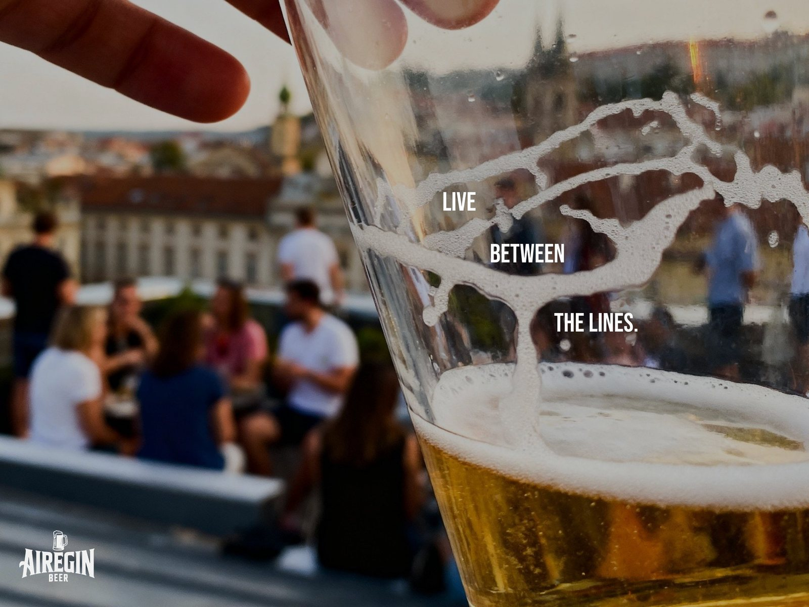
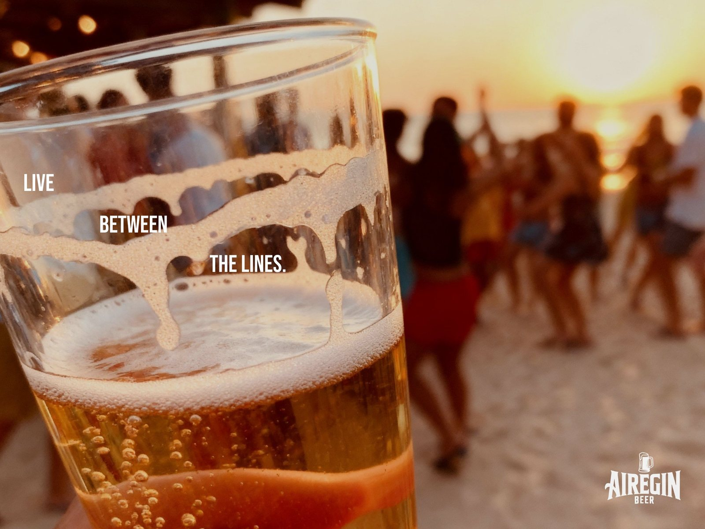
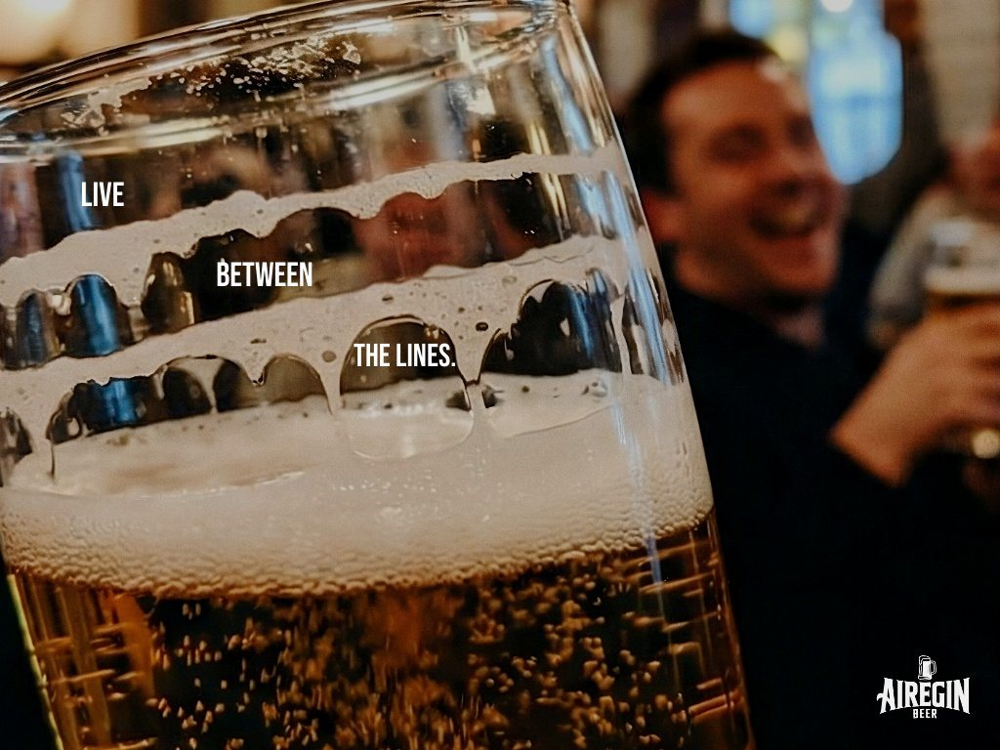

Lo que hago cuando nadie mira.
Lo que hago cuando nadie me lo pide.
Música, redes, escritura y experimentos con IA. Proyectos sin cliente y sin brief, donde pruebo ideas, formatos y herramientas solo por las ganas de hacerlo.
Corto
Un corto poético producido íntegramente con la Magnific Creative Suite: del guion al último fotograma. Una pieza para explorar hasta dónde puede llegar la narrativa audiovisual hecha enteramente con IA — manteniendo siempre una voz y una intención humanas detrás de cada plano.
El desagüe (the drain) — cortometraje completo.
Gráficas
Campaña print para una cerveza que no existe. El claim, "Live between the lines", vive donde viven las cervezas: entre las líneas de espuma que va dejando el vaso a medida que se bebe. Una misma idea declinada en tres momentos — una azotea, una playa al atardecer, un bar lleno — porque entre líneas se vive en todas partes.



La campaña "Live between the lines", en tres ambientes.
Música & RRSS
Mi grupo de música — y mi campo de pruebas para redes sociales. Con Animo Pánico tengo un par de temas publicados, pero sobre todo es donde experimento con ideas y formatos para redes: lo que me mantiene afilado en un terreno donde las marcas se juegan la atención cada día.
Para la canción "Lo que pasó en el asiento de la parte de atrás" hicimos este videoclip, una de esas ideas que salen cuando no hay brief que te frene.
Videoclip de "Lo que pasó en el asiento de la parte de atrás" — en Instagram.
Escritura
Cuando no escribo para marcas, escribo para mí. En Medium publico artículos y relatos — el músculo de escribir por gusto, sin funnel ni call to action, que al final es el que sostiene todo lo demás.
¿Tienes un reto parecido?
Hablemos →